Histograms¶
calcHist¶
Calculates a histogram of a set of arrays.
- C++: void calcHist(const Mat* images, int nimages, const int* channels, InputArray mask, OutputArray hist, int dims, const int* histSize, const float** ranges, bool uniform=true, bool accumulate=false )¶
- C++: void calcHist(const Mat* images, int nimages, const int* channels, InputArray mask, SparseMat& hist, int dims, const int* histSize, const float** ranges, bool uniform=true, bool accumulate=false )¶
- Python: cv2.calcHist(images, channels, mask, histSize, ranges[, hist[, accumulate]]) → hist¶
- C: void cvCalcHist(IplImage** image, CvHistogram* hist, int accumulate=0, const CvArr* mask=NULL )¶
- Python: cv.CalcHist(image, hist, accumulate=0, mask=None) → None¶
Parameters: - images – Source arrays. They all should have the same depth, CV_8U or CV_32F , and the same size. Each of them can have an arbitrary number of channels.
- nimages – Number of source images.
- channels – List of the dims channels used to compute the histogram. The first array channels are numerated from 0 to images[0].channels()-1 , the second array channels are counted from images[0].channels() to images[0].channels() + images[1].channels()-1, and so on.
- mask – Optional mask. If the matrix is not empty, it must be an 8-bit array of the same size as images[i] . The non-zero mask elements mark the array elements counted in the histogram.
- hist – Output histogram, which is a dense or sparse dims -dimensional array.
- dims – Histogram dimensionality that must be positive and not greater than CV_MAX_DIMS (equal to 32 in the current OpenCV version).
- histSize – Array of histogram sizes in each dimension.
- ranges – Array of the dims arrays of the histogram bin boundaries in each dimension. When the histogram is uniform ( uniform =true), then for each dimension i it is enough to specify the lower (inclusive) boundary 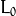 of the 0-th histogram bin and the upper (exclusive) boundary 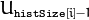 for the last histogram bin histSize[i]-1 . That is, in case of a uniform histogram each of ranges[i] is an array of 2 elements. When the histogram is not uniform ( uniform=false ), then each of ranges[i] contains histSize[i]+1 elements: 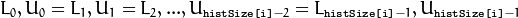 . The array elements, that are not between and 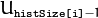 , are not counted in the histogram.
- uniform – Flag indicating whether the histogram is uniform or not (see above).
- accumulate – Accumulation flag. If it is set, the histogram is not cleared in the beginning when it is allocated. This feature enables you to compute a single histogram from several sets of arrays, or to update the histogram in time.
The functions calcHist calculate the histogram of one or more arrays. The elements of a tuple used to increment a histogram bin are taken from the corresponding input arrays at the same location. The sample below shows how to compute a 2D Hue-Saturation histogram for a color image.
#include <cv.h>
#include <highgui.h>
using namespace cv;
int main( int argc, char** argv )
{
Mat src, hsv;
if( argc != 2 || !(src=imread(argv[1], 1)).data )
return -1;
cvtColor(src, hsv, CV_BGR2HSV);
// Quantize the hue to 30 levels
// and the saturation to 32 levels
int hbins = 30, sbins = 32;
int histSize[] = {hbins, sbins};
// hue varies from 0 to 179, see cvtColor
float hranges[] = { 0, 180 };
// saturation varies from 0 (black-gray-white) to
// 255 (pure spectrum color)
float sranges[] = { 0, 256 };
const float* ranges[] = { hranges, sranges };
MatND hist;
// we compute the histogram from the 0-th and 1-st channels
int channels[] = {0, 1};
calcHist( &hsv, 1, channels, Mat(), // do not use mask
hist, 2, histSize, ranges,
true, // the histogram is uniform
false );
double maxVal=0;
minMaxLoc(hist, 0, &maxVal, 0, 0);
int scale = 10;
Mat histImg = Mat::zeros(sbins*scale, hbins*10, CV_8UC3);
for( int h = 0; h < hbins; h++ )
for( int s = 0; s < sbins; s++ )
{
float binVal = hist.at<float>(h, s);
int intensity = cvRound(binVal*255/maxVal);
rectangle( histImg, Point(h*scale, s*scale),
Point( (h+1)*scale - 1, (s+1)*scale - 1),
Scalar::all(intensity),
CV_FILLED );
}
namedWindow( "Source", 1 );
imshow( "Source", src );
namedWindow( "H-S Histogram", 1 );
imshow( "H-S Histogram", histImg );
waitKey();
}
Note
- An example for creating histograms of an image can be found at opencv_source_code/samples/cpp/demhist.cpp
- (Python) An example for creating color histograms can be found at opencv_source/samples/python2/color_histogram.py
- (Python) An example illustrating RGB and grayscale histogram plotting can be found at opencv_source/samples/python2/hist.py
calcBackProject¶
Calculates the back projection of a histogram.
- C++: void calcBackProject(const Mat* images, int nimages, const int* channels, InputArray hist, OutputArray backProject, const float** ranges, double scale=1, bool uniform=true )¶
- C++: void calcBackProject(const Mat* images, int nimages, const int* channels, const SparseMat& hist, OutputArray backProject, const float** ranges, double scale=1, bool uniform=true )¶
- Python: cv2.calcBackProject(images, channels, hist, ranges, scale[, dst]) → dst¶
- C: void cvCalcBackProject(IplImage** image, CvArr* backProject, const CvHistogram* hist)¶
- Python: cv.CalcBackProject(image, back_project, hist) → None¶
Parameters: - images – Source arrays. They all should have the same depth, CV_8U or CV_32F , and the same size. Each of them can have an arbitrary number of channels.
- nimages – Number of source images.
- channels – The list of channels used to compute the back projection. The number of channels must match the histogram dimensionality. The first array channels are numerated from 0 to images[0].channels()-1 , the second array channels are counted from images[0].channels() to images[0].channels() + images[1].channels()-1, and so on.
- hist – Input histogram that can be dense or sparse.
- backProject – Destination back projection array that is a single-channel array of the same size and depth as images[0] .
- ranges – Array of arrays of the histogram bin boundaries in each dimension. See calcHist() .
- scale – Optional scale factor for the output back projection.
- uniform – Flag indicating whether the histogram is uniform or not (see above).
The functions calcBackProject calculate the back project of the histogram. That is, similarly to calcHist , at each location (x, y) the function collects the values from the selected channels in the input images and finds the corresponding histogram bin. But instead of incrementing it, the function reads the bin value, scales it by scale , and stores in backProject(x,y) . In terms of statistics, the function computes probability of each element value in respect with the empirical probability distribution represented by the histogram. See how, for example, you can find and track a bright-colored object in a scene:
- Before tracking, show the object to the camera so that it covers almost the whole frame. Calculate a hue histogram. The histogram may have strong maximums, corresponding to the dominant colors in the object.
- When tracking, calculate a back projection of a hue plane of each input video frame using that pre-computed histogram. Threshold the back projection to suppress weak colors. It may also make sense to suppress pixels with non-sufficient color saturation and too dark or too bright pixels.
- Find connected components in the resulting picture and choose, for example, the largest component.
This is an approximate algorithm of the CamShift() color object tracker.
See also
compareHist¶
Compares two histograms.
- C++: double compareHist(InputArray H1, InputArray H2, int method)¶
- C++: double compareHist(const SparseMat& H1, const SparseMat& H2, int method)¶
- Python: cv2.compareHist(H1, H2, method) → retval¶
- C: double cvCompareHist(const CvHistogram* hist1, const CvHistogram* hist2, int method)¶
- Python: cv.CompareHist(hist1, hist2, method) → float¶
Parameters: - H1 – First compared histogram.
- H2 – Second compared histogram of the same size as H1 .
- method –
Comparison method that could be one of the following:
- CV_COMP_CORREL Correlation
- CV_COMP_CHISQR Chi-Square
- CV_COMP_INTERSECT Intersection
- CV_COMP_BHATTACHARYYA Bhattacharyya distance
- CV_COMP_HELLINGER Synonym for CV_COMP_BHATTACHARYYA
The functions compareHist compare two dense or two sparse histograms using the specified method:
Correlation (method=CV_COMP_CORREL)
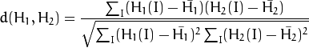
where
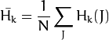
and 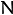 is a total number of histogram bins.
Chi-Square (method=CV_COMP_CHISQR)
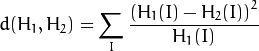
Intersection (method=CV_COMP_INTERSECT)
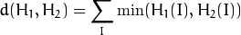
Bhattacharyya distance (method=CV_COMP_BHATTACHARYYA or method=CV_COMP_HELLINGER). In fact, OpenCV computes Hellinger distance, which is related to Bhattacharyya coefficient.

The function returns 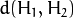 .
While the function works well with 1-, 2-, 3-dimensional dense histograms, it may not be suitable for high-dimensional sparse histograms. In such histograms, because of aliasing and sampling problems, the coordinates of non-zero histogram bins can slightly shift. To compare such histograms or more general sparse configurations of weighted points, consider using the EMD() function.
EMD¶
Computes the “minimal work” distance between two weighted point configurations.
- C++: float EMD(InputArray signature1, InputArray signature2, int distType, InputArray cost=noArray(), float* lowerBound=0, OutputArray flow=noArray() )¶
- C: float cvCalcEMD2(const CvArr* signature1, const CvArr* signature2, int distance_type, CvDistanceFunction distance_func=NULL, const CvArr* cost_matrix=NULL, CvArr* flow=NULL, float* lower_bound=NULL, void* userdata=NULL )¶
- Python: cv.CalcEMD2(signature1, signature2, distance_type, distance_func=None, cost_matrix=None, flow=None, lower_bound=None, userdata=None) → float¶
Parameters: - signature1 – First signature, a 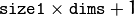 floating-point matrix. Each row stores the point weight followed by the point coordinates. The matrix is allowed to have a single column (weights only) if the user-defined cost matrix is used.
- signature2 – Second signature of the same format as signature1 , though the number of rows may be different. The total weights may be different. In this case an extra “dummy” point is added to either signature1 or signature2 .
- distType – Used metric. CV_DIST_L1, CV_DIST_L2 , and CV_DIST_C stand for one of the standard metrics. CV_DIST_USER means that a pre-calculated cost matrix cost is used.
- distance_func –
Custom distance function supported by the old interface. CvDistanceFunction is defined as:
typedef float (CV_CDECL * CvDistanceFunction)( const float* a, const float* b, void* userdata );
where a and b are point coordinates and userdata is the same as the last parameter.
- cost – User-defined 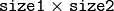 cost matrix. Also, if a cost matrix is used, lower boundary lowerBound cannot be calculated because it needs a metric function.
- lowerBound – Optional input/output parameter: lower boundary of a distance between the two signatures that is a distance between mass centers. The lower boundary may not be calculated if the user-defined cost matrix is used, the total weights of point configurations are not equal, or if the signatures consist of weights only (the signature matrices have a single column). You must initialize *lowerBound . If the calculated distance between mass centers is greater or equal to *lowerBound (it means that the signatures are far enough), the function does not calculate EMD. In any case *lowerBound is set to the calculated distance between mass centers on return. Thus, if you want to calculate both distance between mass centers and EMD, *lowerBound should be set to 0.
- flow – Resultant
 flow matrix: 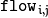 is a flow from
flow matrix: 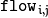 is a flow from  -th point of signature1 to 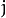 -th point of signature2 .
-th point of signature1 to 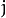 -th point of signature2 . - userdata – Optional pointer directly passed to the custom distance function.
The function computes the earth mover distance and/or a lower boundary of the distance between the two weighted point configurations. One of the applications described in [RubnerSept98] is multi-dimensional histogram comparison for image retrieval. EMD is a transportation problem that is solved using some modification of a simplex algorithm, thus the complexity is exponential in the worst case, though, on average it is much faster. In the case of a real metric the lower boundary can be calculated even faster (using linear-time algorithm) and it can be used to determine roughly whether the two signatures are far enough so that they cannot relate to the same object.
equalizeHist¶
Equalizes the histogram of a grayscale image.
- C++: void equalizeHist(InputArray src, OutputArray dst)¶
- Python: cv2.equalizeHist(src[, dst]) → dst¶
- C: void cvEqualizeHist(const CvArr* src, CvArr* dst)¶
Parameters: - src – Source 8-bit single channel image.
- dst – Destination image of the same size and type as src .
The function equalizes the histogram of the input image using the following algorithm:
Calculate the histogram 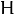 for src .
Normalize the histogram so that the sum of histogram bins is 255.
Compute the integral of the histogram:
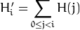
Transform the image using 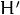 as a look-up table: 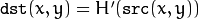
The algorithm normalizes the brightness and increases the contrast of the image.
Extra Histogram Functions (C API)¶
The rest of the section describes additional C functions operating on CvHistogram.
CalcBackProjectPatch¶
Locates a template within an image by using a histogram comparison.
- C: void cvCalcBackProjectPatch(IplImage** images, CvArr* dst, CvSize patch_size, CvHistogram* hist, int method, double factor)¶
- Python: cv.CalcBackProjectPatch(images, dst, patch_size, hist, method, factor) → None¶
Parameters: - images – Source images (though, you may pass CvMat** as well).
- dst – Destination image.
- patch_size – Size of the patch slid though the source image.
- hist – Histogram.
- method – Comparison method passed to CompareHist() (see the function description).
- factor – Normalization factor for histograms that affects the normalization scale of the destination image. Pass 1 if not sure.
The function calculates the back projection by comparing histograms of the source image patches with the given histogram. The function is similar to matchTemplate(), but instead of comparing the raster patch with all its possible positions within the search window, the function CalcBackProjectPatch compares histograms. See the algorithm diagram below:
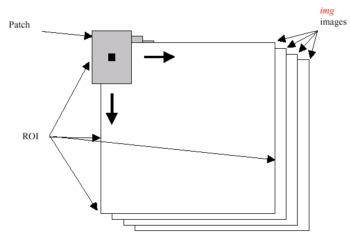CalcProbDensity¶
Divides one histogram by another.
- C: void cvCalcProbDensity(const CvHistogram* hist1, const CvHistogram* hist2, CvHistogram* dst_hist, double scale=255 )¶
- Python: cv.CalcProbDensity(hist1, hist2, dst_hist, scale=255) → None¶
Parameters: - hist1 – First histogram (the divisor).
- hist2 – Second histogram.
- dst_hist – Destination histogram.
- scale – Scale factor for the destination histogram.
The function calculates the object probability density from two histograms as:
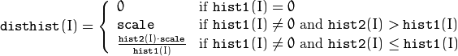
ClearHist¶
Clears the histogram.
- C: void cvClearHist(CvHistogram* hist)¶
- Python: cv.ClearHist(hist) → None¶
Parameters: hist – Histogram.
The function sets all of the histogram bins to 0 in case of a dense histogram and removes all histogram bins in case of a sparse array.
CopyHist¶
Copies a histogram.
- C: void cvCopyHist(const CvHistogram* src, CvHistogram** dst)¶
Parameters: - src – Source histogram.
- dst – Pointer to the destination histogram.
The function makes a copy of the histogram. If the second histogram pointer *dst is NULL, a new histogram of the same size as src is created. Otherwise, both histograms must have equal types and sizes. Then the function copies the bin values of the source histogram to the destination histogram and sets the same bin value ranges as in src.
CreateHist¶
Creates a histogram.
- C: CvHistogram* cvCreateHist(int dims, int* sizes, int type, float** ranges=NULL, int uniform=1 )¶
- Python: cv.CreateHist(dims, type, ranges=None, uniform=1) → hist¶
Parameters: - dims – Number of histogram dimensions.
- sizes – Array of the histogram dimension sizes.
- type – Histogram representation format. CV_HIST_ARRAY means that the histogram data is represented as a multi-dimensional dense array CvMatND. CV_HIST_SPARSE means that histogram data is represented as a multi-dimensional sparse array CvSparseMat.
- ranges – Array of ranges for the histogram bins. Its meaning depends on the uniform parameter value. The ranges are used when the histogram is calculated or backprojected to determine which histogram bin corresponds to which value/tuple of values from the input image(s).
- uniform – Uniformity flag. If not zero, the histogram has evenly spaced bins and for every 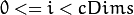 ranges[i] is an array of two numbers: lower and upper boundaries for the i-th histogram dimension. The whole range [lower,upper] is then split into dims[i] equal parts to determine the i-th input tuple value ranges for every histogram bin. And if uniform=0 , then the i-th element of the ranges array contains dims[i]+1 elements: 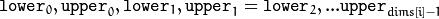 where 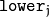 and 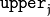 are lower and upper boundaries of the i-th input tuple value for the j-th bin, respectively. In either case, the input values that are beyond the specified range for a histogram bin are not counted by CalcHist() and filled with 0 by CalcBackProject().
The function creates a histogram of the specified size and returns a pointer to the created histogram. If the array ranges is 0, the histogram bin ranges must be specified later via the function SetHistBinRanges(). Though CalcHist() and CalcBackProject() may process 8-bit images without setting bin ranges, they assume they are equally spaced in 0 to 255 bins.
GetMinMaxHistValue¶
Finds the minimum and maximum histogram bins.
- C: void cvGetMinMaxHistValue(const CvHistogram* hist, float* min_value, float* max_value, int* min_idx=NULL, int* max_idx=NULL )¶
- Python: cv.GetMinMaxHistValue(hist)-> (min_value, max_value, min_idx, max_idx)¶
Parameters: - hist – Histogram.
- min_value – Pointer to the minimum value of the histogram.
- max_value – Pointer to the maximum value of the histogram.
- min_idx – Pointer to the array of coordinates for the minimum.
- max_idx – Pointer to the array of coordinates for the maximum.
The function finds the minimum and maximum histogram bins and their positions. All of output arguments are optional. Among several extremas with the same value the ones with the minimum index (in the lexicographical order) are returned. In case of several maximums or minimums, the earliest in the lexicographical order (extrema locations) is returned.
MakeHistHeaderForArray¶
Makes a histogram out of an array.
- C: CvHistogram* cvMakeHistHeaderForArray(int dims, int* sizes, CvHistogram* hist, float* data, float** ranges=NULL, int uniform=1 )¶
Parameters: - dims – Number of the histogram dimensions.
- sizes – Array of the histogram dimension sizes.
- hist – Histogram header initialized by the function.
- data – Array used to store histogram bins.
- ranges – Histogram bin ranges. See CreateHist() for details.
- uniform – Uniformity flag. See CreateHist() for details.
The function initializes the histogram, whose header and bins are allocated by the user. ReleaseHist() does not need to be called afterwards. Only dense histograms can be initialized this way. The function returns hist.
NormalizeHist¶
Normalizes the histogram.
- C: void cvNormalizeHist(CvHistogram* hist, double factor)¶
- Python: cv.NormalizeHist(hist, factor) → None¶
Parameters: - hist – Pointer to the histogram.
- factor – Normalization factor.
The function normalizes the histogram bins by scaling them so that the sum of the bins becomes equal to factor.
ReleaseHist¶
Releases the histogram.
- C: void cvReleaseHist(CvHistogram** hist)¶
Parameters: - hist – Double pointer to the released histogram.
The function releases the histogram (header and the data). The pointer to the histogram is cleared by the function. If *hist pointer is already NULL, the function does nothing.
SetHistBinRanges¶
Sets the bounds of the histogram bins.
- C: void cvSetHistBinRanges(CvHistogram* hist, float** ranges, int uniform=1 )¶
Parameters: - hist – Histogram.
- ranges – Array of bin ranges arrays. See CreateHist() for details.
- uniform – Uniformity flag. See CreateHist() for details.
This is a standalone function for setting bin ranges in the histogram. For a more detailed description of the parameters ranges and uniform, see the CalcHist() function that can initialize the ranges as well. Ranges for the histogram bins must be set before the histogram is calculated or the backproject of the histogram is calculated.
ThreshHist¶
Thresholds the histogram.
- C: void cvThreshHist(CvHistogram* hist, double threshold)¶
- Python: cv.ThreshHist(hist, threshold) → None¶
Parameters: - hist – Pointer to the histogram.
- threshold – Threshold level.
The function clears histogram bins that are below the specified threshold.
| [RubnerSept98] |
|
Help and Feedback
You did not find what you were looking for?- Ask a question on the Q&A forum.
- If you think something is missing or wrong in the documentation, please file a bug report.

Table Of Contents
Previous topic
Miscellaneous Image Transformations
Next topic
Structural Analysis and Shape Descriptors